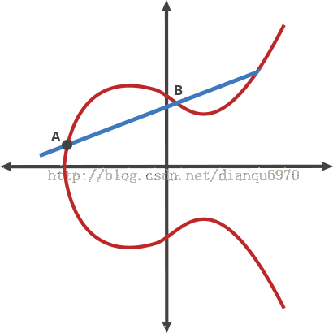

以太坊虚拟机
https://www.jianshu.com/p/e45614c25b62?_t=1522874771
比特币和以太坊的渊源
对币圈和链圈的人来说，Vitalik Buterin(1994年出生)是无可争议的大神。很多人可能不知道，V神作为早期比特币社区的活跃成员，一开始提议bitcoin需要开发通用的脚本语言来支持丰富功能的应用开发，但没有获得比特币开发团队的支持。于是重起炉灶，2013年发起以太坊项目，有了今天的繁荣的加密token、收藏品游戏、DAO。接下来，我们就先看看，V神不满的比特币脚本系统到底是什么样的？
比特币的交易主要依据的UTXOs模型，而以太坊摒弃该模型，采用了类似的bmoney的账户范式
区块链范式
区块
EVM设计于执行
内存模型
执行模型
错误处理
一篇对数字签名的理解
比特币是基于密码学的，密码学这门科学不仅包含被称之为“秘密写作的”加密学，也可以用来证明秘密的知识，而不会泄漏秘密（数字签名），或证明数据的真实性（数字指纹），接下来介绍一下比特币中来控制资金的所有权的密码学，包括了密钥，地址和钱包。
数字签名
简介
比特币的所有权是通过数字密钥，比特币地址和数字签名来确定的，数字密钥实际上不是存储在网络中的，而是由用户独立生成的，存储在钱包文件中或是数据库中；密钥实现了比特币的许多趣味性，包括去中心化信任和控制，所有权认证和基于密码学证明的安全模型
大多数比特币交易都需要一个有效的签名才会被存储在区块链中，只有有效的密钥才能产生有效的数字签名，因此拥有-密钥就拥有了对该账户的比特币的控制权，那么交易中的见证数据证明了所用资金的真正归谁所有
密钥是成对出现的，有一个私钥和公钥所组成
首先我们先介绍密码学并解释比特币中使用的数学知识，然后了解密钥如何被产生的，存储和管理的，代表私钥和公钥，地址和脚本地址的各种编码格式，最后，说一下密钥和地址的高级用途：比特币靓号，多重签名以及脚本地址和纸钱包
公钥加密和加密货币
公钥加密发明于20世纪70年代，它是计算机和信息安全的数学基础。
例如，素数幂和椭圆曲线乘法，这些函数都是不可逆的，很容易向一个方向计算，但是不可以向反方向倒推。比特币正使用椭圆曲线乘法作为公钥加密的基础
支付比特币时，比特币的当前所有者需要交易中提交其公钥和签名（每次交易的签名都不同，但均是同一个私钥生成的），所有比特币网络中的所有人都可通过提交的公钥和签名进行验证，并确认该交易是否有效，即支付者拥有该交易的比特币的所有权
大多数比特币钱包工具为了方便将私钥和公钥以密钥对的形式存储在一起，然而公钥可以由私钥计算的到，所以只存储私钥即可
私钥和公钥
一个比特币钱包中包含一系列的密钥对，每个密钥对包括一个私钥和一个公钥，私钥(k)是一个数字，通常是随机选的，有了私钥通过椭圆曲线乘法这个单向加密的函数产生一个公钥，然后使用一个单向加密哈希函数生成比特币地址
为什么要使用非对称加密（公钥/私钥）？
非对称密码学适用性使得任何人都可以验证每笔交易的每个签名，同时确保只有私钥的所有者可以产生有效的签名
私钥
私钥就是一个随机选出的数字而已。私钥必须始终保持机密，因为一旦泄漏给第三方，那么就相当于将该私钥下的控制的比特币所有权拱手于人；私钥还必须要备份，一旦丢失同理也是弃掉了将该私钥下的控制的比特币所有权
私钥生成，随机256位的二进制数字（64位的16进制）
2256 是一个非常大数字，用十进制表示的话大约1077 ，而可见宇宙被估计只含有1080 个原子
公钥
通过椭圆曲线乘法可以从私钥计算得到公钥，这个过程不可逆转：K = k*G (k是私钥，G被称为生成点点常数点，而K是所得的公钥)
通过私钥，可以计算得到公钥，但是由于过程不可逆，无法通过公钥得到私钥
椭圆曲线密码学(Elliptic Curve Cryptography)
椭圆曲线加密法是一种基于离散对数问题的非对称加密法，可以用对椭圆曲线上的点进行加法或乘法运算来表达。
y2 = x3 + ax + b

备注：动态效果图参看椭圆曲线加密学习

比特币地址
以公钥K为输入，计算其SHA256哈希值，并以此结果计算RIPEMD160哈希值，得到一个长度160位（20字节）的数字：
A = RIPEMD160(SHA256(K))
address = Base58 Encode(A)
Base58和Base58Check编码
为了更简洁方便表示长串的数字，使用更少的符号，许多计算机会使用一种以数字和字母组成的大于十进制的表示法；
Base64使用了26个大小写字母，10个数字及两个符号（+ /）
Base58是一种基于文本的二进制编码格式，这种编码格式不仅实现了数据压缩，保持了易读性，Base58不包含数字0，字母o，大小写i，以及+ / ，比Base64少了6个字符

密钥格式
用Python实现密钥和比特币地址
高级密钥和地址
https://blog.csdn.net/taifei/article/details/74382718
https://blog.csdn.net/taifei/article/details/73880736
https://blog.csdn.net/ztemt_sw2/article/details/81101717
https://github.com/cyhhao/eth-canvas
https://blog.csdn.net/j3t9z7h/article/details/80970818
一篇对比特币网络的理解
- 1.P2P网络架构
- 2.节点类型及角色
- 3.扩展比特币网络
- 4.比特币传播网络
- 5.网络发现
- 6.全节点
- 7.交换“库存清单”
- 8.P2P的连接到数据同步
- 9.简易支付验证(SPV)节点
- 10.Bloom过滤器
- 11.SPV节点如何使用Bloom过滤器
- 12.SPV节点和隐私
- 13.加密和认证连接
- 14.交易池
- 15.DOS攻击（扩展阅读）
1.P2P网络架构
P2P是指同一网络中的美态计算机都彼此对等，各个节点共同提供网络服务，每个网络节点以"扁平(flat)"的拓扑结构互相连通
P2P网络节点之间交互运作，协同处理，每个节点在对外提供服务的同时也是使用网络中其它节点提供的服务
对于比特币设计的一种点对点数字现金系统，它的网络架构即反应出其特性，通过维持一种扁平化网路共识，来实现去中心化的交易系统
“比特币网络”是按照比特币P2P协议运行的一系列节点的集合，除了比特币协议之外，比特币网络中也包含其它的协议
例如Stratum协议，就被应用于挖矿，以及轻量级或移动端的比特币钱包中。网关（gateway）路由服务器提供的这些服务协议
例如：Stratum服务器通过Stratum协议将所有的Stratum挖矿节点连接至比特币主网络，并将Stratum协议桥连接(bridge)至比特币p2p协议之上
我们所说的比特币网络是指“比特币P2P协议”，“矿池挖矿协议”，“Stratum协议”以及其它连接比特币系统组件相关协议的整体网络机构
2.节点类型及角色
一个比特币全节点是有“路由”，“区块链数据库”，“挖矿”，“钱包”组成；
- 标准客户端
- 全部数据块节点
- 仅挖矿
- 轻量级钱包SPV
- 协议池服务
- 挖矿节点
- 轻量的底层钱包
| 节点角色 | 描述 | |
| Wallet | Miner | 【标准客户端】 包含一个钱包，挖矿，全部的区块数据，p2p的网络路由节点 |
| Block | NetWork | |
| 节点角色 | 描述 | |
| -- | -- | 【全部数据块节点】 包含全部的区块数据，p2p的网络路由节点 |
| Block | NetWork | |
| 节点角色 | 描述 | |
| -- | Miner | 【仅挖矿】 包含一挖矿，全部的区块数据，p2p的网络路由节点 |
| Block | NetWork | |
| 节点角色 | 描述 | |
| Wallet | -- | 【轻量级钱包SPV】 包含钱包，p2p的网络路由节点 |
| -- | NetWork | |
| 节点角色 | 描述 | |
| Pool Server | Stratum Server | 【协议池服务】 网关路由器将比特币P2P网络连接到运行其他协议的节点，例如矿池挖掘节点或层节点 |
| 节点角色 | 描述 | |
| Miner | Miner | 【挖矿节点】 包含一个挖矿的功能，没有区块链，包含一个底层协议节点或其它挖矿池的协议节点 |
| Stratum node | Pool node | |
| 节点角色 | 描述 | |
| Wallet | -- | 【轻量的底层钱包】 包含一个钱包和一个底层协议的网络节点 |
| -- | StratumNode | |
3.扩展比特币网络
这张复杂的网路架构图我还没有仔细的分析？

4.比特币传播网络
比特币传播网络涉及到了底层网络架构的传输优化（建议了解即可）
比特币网络传播是一种尝试最新小化矿工之间的传输块的延迟网络
为了延迟矿工之间快速同步块，该网络由世界各地的亚马逊web服务基础架构上托管的几个专门的节点，并且连接大多数矿工和采矿池
2016年比特币传播网络被替换成“Fast Internet Bitcoin Replay Engine”(FIBRE)
FIBRE是一种基于UDP的中继网络，可以中继节点网络内的块，FIBRE也是实现了compact(紧凑) block，进一步减少了传输的数据量和网络延迟
还有一个提案阶段中继网络是Falcon，使用“直通路由”而不是“存储转发”来减少延迟，通过传播块的部分，而不是等待知道接受到完成的块
补充一下什么是中继
中继（Relay）是连个交换中心之间的一条传输通路，中继线是承载多条逻辑链路的一条物理连接
在中继的无线系统中，每个用户只是在呼叫时才分配一个信道，一旦通过终止，原先占用的信道就立即回到可用信道库中
物理层中继系统：转发器。
数据链路层中继系统：网桥
网络层中继系统：路由器
在网络层以上的中继系统称为网关，网关就是连接两备个网络的设备
无线路由器中继与桥接模式的区别？
中继模式，就是利用无线路由器之间的无线连接功能，将无线信号从一个中继点传递到下一个中继点，实现信号的增强，并形成新的无线覆盖区域，最终达到延伸无线网络的覆盖范围的目的。事实上，只要有两台支持中继功能的无线路由器，即可拓展网络覆盖范围。
中继和桥接功能对于无线用户的实际使用基本上是一样的，只是设备有所不同，并非所有无线路由器都可以桥接，无线路由桥接就是把无线路由器当中继器使用。桥接并非无线路由器的主要功能。使用中继模式时，网络SSID号均一致，而在桥接模式时，网络SSID号不同。
5.网络发现
p2p握手协议
当新的网络节点启动后，为了能够参与协同运作，必须发现网络中的其他比特币节点；
由于比特币网络的拓扑结构并不基于节点间的地理位置，因此各个节点之间的地理位置信息完全无关，会随机的选择网络中存在的比特币节点与之相连
节点通常采用了TCP协议，通常使用8333端口与已知的对等节点建立连接，在建立连接的时，该节点会通过发送一条包含基本认证内容的version消息开始“握手”通讯
version:{
nVsersion:定义客户端所采用的比特币p2p协议的版本
nLocalServices:[
一组该节点支持的本地服务列表，当前仅支持NOED_NETWORK
]
nTime:当前时间
addrYou:当前节点可见的远程节点的IP地址
addrMe:本地节点所发现的本机IP地址
subver:指示当前节点运行的软件类型子版本号（例如："/Satoshi:0.9.2.1/"）
baseHeight:当前节点区块链的区块高度
}
版本信息始终是任何对等发送给另一个对等的第一条消息，接收版本消息的本地对等将检查远程对等体报告的nVersion，并确定远端对是否兼容，如果兼容则本地等将确认版本消息，并发送一个（ver）ack建立连接
sequenceDiagram
participant a as NodeA
participant b as NodeB
opt 节点A请求连接节点B
a-->>b: 节点A的version
b-->>b: 验证节点A的version
b->>a: 发送verack
end
opt 节点B请求连接节点A
b-->>a: 节点B的version
a-->>a: 验证节点A的version
a->>b: 发送verack
end
新节点如何找到对等体
- 使用多个“DNS种子”来查询DNS，这些DNS服务器提供比特币节点的IP地址列表，其中一些DNS种子提供了稳定的比特币侦听节点的静态IP地址列表，还有一些DNS种子是BIND，它从搜索器或长时间运行的比特币节点收集的比特币节点地址列表中返回一个随机子集，在BitcoinCore客户端中，使用DNS种子的选项switch-dnsseed控制（默认设置为1，以使用DNS种子）
- 不知道网络的引导节点必须被给予至少一个比特币节点的IP地址，之后可以通过进一步来建立连接，命令参数-sendnode可用于连接到一个节点，仅用于将其作为种子
建立连接后地址的传播和发现
当建立一个或者多个连接后，新节点将一条包含自身的ip地址列表的addr消息发送给其它相邻的节点，相邻的节点再将此条addr消息依次转发给其它各自相邻的节点，从而保证新节点信息被多个节点接收，保证连接更稳定；
同时，新接入的节点可以向相邻节点发送getaddr消息，要求他们返回已知的对等节点的ip地址列表
由于节点可以随时的加入和离开，通讯路径是不可靠的，因此节点必须持续进行两项工作：在失去已有连接时发现新的节点，并在其他节点启动时为其提供帮助
一个节点无需连接大量的对等节点，在启动完成后，节点会记住它最新连接成功的对等节点，因此，当重新启动后它迅速与先前的对等节点网络重新建立连接，如果先前的网络无应答，则该节点可以使用种子节点进行重启动
bitcoin-cli getpeerInfo
{
"services" : "00000001",
"lastsend" : 1405634126,
"lastrecv" : 1405634127,
"bytessent" : 23487651,
"bytesrecv" : 138679099,
"conntime" : 1405021768,
"pingtime" : 0.00000000,
"version" : 70002,
"subver" : "/Satoshi:0.9.2.1/",
"inbound" : false,
"startingheight" : 310131,
"banscore" : 0,
"syncnode" : true
},
{
"addr" : "58.23.244.20:8333",
"services" : "00000001",
"lastsend" : 1405634127,
"lastrecv" : 1405634124,
"bytessent" : 4460918,
"bytesrecv" : 8903575,
"conntime" : 1405559628,
"pingtime" : 0.00000000,
"version" : 70001,
"subver" : "/Satoshi:0.8.6/",
"inbound" : false,
"startingheight" : 311074,
"banscore" : 0,
"syncnode" : false
}
异常连接
如果已建立的连接没有数据通信，所在的节点会定期发送信息以维持连接，如果节点持续某个连接长达90分钟没有任何的通信，它会被认为从网络中断开，因此，比特币网络会随时根据变化的节点及网络问题进行动态的调整，无需经过中心化的控制即可进行规模增减的有机调整
6.全节点
全节点是指维持包含全部交易信息的完整区块链的节点，又称“完整区块链节点”，在比特币早起，所有的节点都是全节点；
完整区块链节点，从创始块到网络最新的区块，它可以独立自主的校验任何交易的信息
无需借助任何其他系统，就可以完全摆脱中心化管理，获得完全的独立自由
它的代价就是，需要大量的存储空间和内存空间
7.交换“库存清单”
一个全节点连接到对等节点之后，第一件事要做就是构建完整的区块链，如果该节点不包含如何区块链信息，那么新节点需要从创始块开始的数十万块的全部内容下载到新的节点上；
同步区块的过程中从发送的version消息开始，上面包含区块链的高度（区块的数量），对等节点门会叫唤一个getBlocks消息，其中包含他们本地区块链顶端的哈希值，比较其顶端的区块可得到那个节点区块链更长
较长的节点会给短的节点发送invx（inventory库存）消息，将这些区块的哈希传播出去，缺少这些区块的节点便可以通过各自发送的getData消息请求得到全区块的信息
8.P2P的连接到数据同步
首先，为了防止单个节点承受的压力，单个节点最多承受100个节点的对等网络连接
sequenceDiagram
participant a as Node0
participant b as Node1
participant c as Node2
participant d as ...
opt 1.互相握手ACK
a-->>b: 节点的version
b-->>b: 验证节点的version
b->>a: 发送verack
c-->>d: 节点的version
d-->>d: 验证节点的version
d->>c: 发送verack
end
opt 2.互相传播地址
a-->>b: 上报自己addr信息
a-->>b: 获取节点getaddr信息
a-->>d: 上报自己addr信息
a-->>d: 获取节点getaddr信息
d-->>c: 上报自己addr信息
d-->>c: 获取节点getaddr信息
end
opt 3.互相同步区块
a-->>b: 获取getblocks顶端区块的HASH值
b-->>a: 获取getblocks顶端区块的HASH值
b-->>b: 验证两个区块的高度
b->>a: 发送inv（高于节点0,哈希值列表）
a-->>b: 通过缺少的hash值getdata
a-->>c: 通过缺少的hash值getdata
a-->>d: 通过缺少的hash值getdata
end
9.简易支付验证(SPV)节点
Simplified Payment Verification
什么是SPV
并非所有的节点都有能力存储完整的区块链，例如智能电话，平板电脑，嵌入式系统等等，对于这些设备，通过简化的支付验证(SPV)的方式进行工作，也称为“轻量级客户端”
SPV节点只需要下载区块头，而不用下载包含每个区块中的交易信息，由此产生的区块链的大小时完成区块链的1/1000左右，SPV节点不能构建所有可可用于消费的UTXO的全貌，这是因为他们并不知道网络上所有的交易完整信息
网上说一个例子，每个全节点就像是一个陌生城市里的游客，他带着一张包含每条街道，每个地址的详细地图，而SPV节点就像这个陌生城市里游客只知道一条主干道的名称，通过随机询问该城市中陌生人来获取分段的道路指示；
SPV技术原理
通过merklr_root_hash（验证区块中所有的交易真实性）
取出当前交易所在的区块hash，然后分别从不同的完整的区块节点对应的，默克尔树的叶子hash，然后计算得到根hash，再然后对比本地的区块头中根hash，从而验证了该交易的合法性
按照中本聪的原文，这里有个细节需要注意，SPV指的是“支付验证“，而不是“交易验证”。这两种验证有很大区别。
“交易验证”非常复杂，涉及到验证是否有足够余额可供支出、是否存在双花、脚本能否通过等等，通常由运行完全节点的矿工来完成。
“支付验证”则比较简单，只判断用于“支付”的那笔交易是否已经被验证过，并得到了多少的算力保护（多少确认数）。
如何验证支付交易
简易支付验证是通过参考交易在区块链中的深度，而不是高度，来验证它们；
一个完整拥有区块链的节点会构造一条验证链，这个链条是由区块链按时间倒序一直追溯到创始块的及交易组成，然后SPV节点会验证所有的区块链（但不是所有的交易），并且把区块链和有关交易链接起来
例如，一个全节点要检查第1000000号区块中的某个交易，它会把从该区块开始一直追溯到创始块，将所有的区块都链接起来，并建立一个完整的UTXO数据库，通过确认该UTXO是否还未被支付来证实交易的有效性。SPV节点则不能验证UTXO是否还未支付，相反的SPV节点会在该交易信息和它所在的区块之间用merkle路径建立一条链接，然后SPV节点一直处于等待的状态，至到1000000+6个块写入区块上，并通过确立交易的深度是在1000000-1000006块之下验证交易的有效性
如果一个交易实际上不存在，SPV节点不会误认为该交易存在于某区块中，SPV节点会通过请求merkle路径证明以及验证区块链中的工作证明，来证实交易存性，不过，一个交易的存在是可能对SPV节点“隐藏”的，这个漏洞会针对SPV节点的拒绝服务攻击或双重支付攻击，为了防御这些攻击，SPV节点需要随机链接到多个节点，以增加与至少一个可靠节点相链接的概率；这种随机链接的需求就意味着容易受到网络的分区攻击或Sybil攻击，在Sybil攻击中SPV节点被连接到虚假节点或虚假网络中，没鱼哦通向可靠节点或真正的比特币网络的连接
Sybil攻击（女巫攻击）
在对等网络中，单个节点通常具有多个身份标示，通过控制系统的大部分节点来消弱冗余备份的作用
女巫攻击是在P2P网络中，因为节点随时加入退出等原因，为了维持网络稳定，同一份数据通常需要备份到多个分布式节点上，这就是数据冗余机制。女巫攻击是攻击数据冗余机制的一种有效手段。如果网络中存在一个恶意节点，那么同一个恶意节点可以具有多重身份，那么恶意节点比它还能分。这一分可好，原来需要备份到多个节点的数据被欺骗地备份到了同一个恶意节点（该恶意节点伪装成多重身份），这就是女巫攻击
1.工作量证明机制，即证明你是一个节点，是要用计算能力证明，这样极大地增加了攻击的成本
2.身份认证（基于第三方的身份认证和随机密钥分发验证的公钥体制的认证方式）
FISOS金链盟就是用，随机密钥分发验证的公钥体制的认证方式
SPV如何实现？
graph TB
根HASH --> 区块全节点1
根HASH --> 区块全节点2
区块全节点1 --> 区块全节点3
区块全节点1 --> 区块全节点4
区块全节点2 --> 区块全节点5
区块全节点2 --> 区块全节点6
区块全节点3 --> 区块全节点7
区块全节点3 --> 区块全节点8
区块全节点4 --> 区块全节点9
区块全节点4 --> 区块全节点10
区块全节点5 --> 区块全节点11
区块全节点5 --> 区块全节点12
区块全节点6 --> 区块全节点13
区块全节点6 --> 区块全节点14
区块全节点7 --> 第1笔交易的HASH
区块全节点8 --> 第2笔交易的HASH
区块全节点9 --> 第3笔交易的HASH
区块全节点10 --> 第4笔交易的HASH
区块全节点11 --> 第5笔交易的HASH
区块全节点12 --> 第6笔交易的HASH
区块全节点13 --> 第7笔交易的HASH
区块全节点14 --> 第7笔交易的HASH
end
如果想验证第一笔交易，那么需要查询节点8，节点4，节点2对应当前块所在的叶子节点的HASH
同理如果想验证第四笔交易，哪些需要查询节点9，节点3，节点2对应当前块所在的叶子节点的HASH
再然后，通过查询到的叶子节点的HASH，进行默克尔二叉树HASH运算，得到根HASH
引入SPV节点带来的风险
隐私风险
SPV节点对特定数据的请求会无意中透漏了钱包里的地址信息，监控网络的第三方可以跟踪某个SPV节点上的钱包所请求的全部信息，并且利用交易信息把比特币地址和钱包用户关联起来，从而损害了用户的隐私
如何解决引入SPV的风险
Bloom过滤器
通过一个采用概率而不是固定模式过滤的机制，允许SPV节点只接收交易信息的子集，同时不会精准的泄漏哪些它们的感兴趣的地址
接下来会深入的讲解Bloom过滤器
10.Bloom过滤器
什么是Bloom过滤器
是一个允许用户描述特定的关键词组合而不必精确表述的基于概率的过滤方法
它让用户在有效搜索关键词的同时保护了他们的隐私，这个方法解决了对等节点发送交易信息查询请求，同时交易的地址也不会暴露
之前一个陌生人到陌生城市找线路的例子，当陌生人询问“教堂23号在哪里”，其实不经意间暴露了自己的目的地，Bloom过滤器则是这样询问的，附近带有“堂”字的街道吗？或是以“堂”结尾或是以“教”开头的街道
Bloom过滤器是如何工作的
实现的原理：由一个可变长度(N)的二进制数组（N位进制树构成的一个位域）和数量可变的(M)的一组哈希函数组成；
这些哈希函数的输出值始终在1和N之间，该数组与二进制数组相对对应，该函数位确定函数，也就是说任何一个使用相同Bloom过滤器的节点通过该函数能对特定输入得到同一个结果；Blomm过滤器的准确性和私密性通过改变长度(N)和哈希数量(M)来调节
位数组和k散列函数
1.位数组
初始化状态，BloomFilter是一个长度位M的位数组，每一位都置为0
2.添加元素（k个独立的hash函数）
添加元素时，对x进行k个哈希函数得到的k个哈希值，对其进行M求余，对应的bit位设置为1
3.判断元素是否存在
判断y是否属于这个集合，对y使用k个哈希函数得到的k个哈希值，对M求余，所对应的位置都是1，则认为y属于该集合（可能存在误判），否则就认为y不属于该集合
BloomFilter（布隆过滤）算法
已知参数列表如下：
m 位数组的长度
n 加入其中元素的数量
k 哈希函数的个数
f 错误率
公式( 1 - (1 - 1/m)kn )k ≈ (1 - e-kn/m )k
加入m和n是固定的值的时候，能够使f最小化的k为
(m/n)ln(2) ≈ 9m/13n ≈ 0.7m/n
此时给出的f为
f = (1/2)k ≈ 0.6185m/n
根据以上公式，对于任意给定的f
n = m ln(0.6185)/ln(f)
需要k个hash来达成目标
k = -ln(f)/ln(2)
由于k必须是整数，还应该使用上面的公私求得实际的错误率
f = (1-e-kn/m )k
使用Hash函数的个数，位数组的大小来降低失误率。
以下的运用场景还需要待研究
具体参考大量数据去重：Bitmap和布隆过滤器(Bloom Filter)
可以使用JDK自带的BitSet来实现，但存在两个问题：OOM和持久化问题。
结合Redis的BitMap能够解决，唯一需要注意的是Redis的BitMap只支持232 大小，对应到内存也就是512MB,数组的下标最大只能是232-1 。不过这个限制可以通过构建多个Redis的Bitmap通过hash取模的方式分散一下即可。万分之一的误判率，512MB可以放下2亿条数据。
好了，扯了这么多，贴代码！(注：在MagnusS/Java-BloomFilter的基础上加上了Redis持久化的实现)
@Component
public class BloomFilter<E> {
@Autowired
private RedisTemplate<String, E> redisTemplate;
@Value("${bloomfilter.expireDays}")
private long expireDays;
// total length of the Bloom filter
private int sizeOfBloomFilter;
// expected (maximum) number of elements to be added
private int expectedNumberOfFilterElements;
// number of hash functions
private int numberOfHashFunctions;
// encoding used for storing hash values as strings
private final Charset charset = Charset.forName("UTF-8");
// MD5 gives good enough accuracy in most circumstances. Change to SHA1 if it's needed
private static final String hashName = "MD5";
private static final MessageDigest digestFunction;
// The digest method is reused between instances
static {
MessageDigest tmp;
try {
tmp = java.security.MessageDigest.getInstance(hashName);
} catch (NoSuchAlgorithmException e) {
tmp = null;
}
digestFunction = tmp;
}
public BloomFilter() {
this(0.0001, 600000);
}
/**
* Constructs an empty Bloom filter.
*
* @param m is the total length of the Bloom filter.
* @param n is the expected number of elements the filter will contain.
* @param k is the number of hash functions used.
*/
public BloomFilter(int m, int n, int k) {
this.sizeOfBloomFilter = m;
this.expectedNumberOfFilterElements = n;
this.numberOfHashFunctions = k;
}
/**
* Constructs an empty Bloom filter with a given false positive probability.
* The size of bloom filter and the number of hash functions is estimated
* to match the false positive probability.
*
* @param falsePositiveProbability is the desired false positive probability.
* @param expectedNumberOfElements is the expected number of elements in the Bloom filter.
*/
public BloomFilter(double falsePositiveProbability, int expectedNumberOfElements) {
this((int) Math.ceil((int) Math.ceil(-(Math.log(falsePositiveProbability) / Math.log(2))) * expectedNumberOfElements / Math.log(2)), // m = ceil(kn/ln2)
expectedNumberOfElements,
(int) Math.ceil(-(Math.log(falsePositiveProbability) / Math.log(2)))); // k = ceil(-ln(f)/ln2)
}
/**
* Adds an object to the Bloom filter. The output from the object's
* toString() method is used as input to the hash functions.
*
* @param element is an element to register in the Bloom filter.
*/
public void add(E element) {
add(element.toString().getBytes(charset));
}
/**
* Adds an array of bytes to the Bloom filter.
*
* @param bytes array of bytes to add to the Bloom filter.
*/
public void add(byte[] bytes) {
if (redisTemplate.opsForValue().get(RedisConsts.CRAWLER_BLOOMFILTER) == null) {
redisTemplate.opsForValue().setBit(RedisConsts.CRAWLER_BLOOMFILTER, 0, false);
redisTemplate.expire(RedisConsts.CRAWLER_BLOOMFILTER, expireDays, TimeUnit.DAYS);
}
int[] hashes = createHashes(bytes, numberOfHashFunctions);
for (int hash : hashes) {
redisTemplate.opsForValue().setBit(RedisConsts.CRAWLER_BLOOMFILTER, Math.abs(hash % sizeOfBloomFilter), true);
}
}
/**
* Adds all elements from a Collection to the Bloom filter.
*
* @param c Collection of elements.
*/
public void addAll(Collection<? extends E> c) {
for (E element : c) {
add(element);
}
}
/**
* Returns true if the element could have been inserted into the Bloom filter.
* Use getFalsePositiveProbability() to calculate the probability of this
* being correct.
*
* @param element element to check.
* @return true if the element could have been inserted into the Bloom filter.
*/
public boolean contains(E element) {
return contains(element.toString().getBytes(charset));
}
/**
* Returns true if the array of bytes could have been inserted into the Bloom filter.
* Use getFalsePositiveProbability() to calculate the probability of this
* being correct.
*
* @param bytes array of bytes to check.
* @return true if the array could have been inserted into the Bloom filter.
*/
public boolean contains(byte[] bytes) {
int[] hashes = createHashes(bytes, numberOfHashFunctions);
for (int hash : hashes) {
if (!redisTemplate.opsForValue().getBit(RedisConsts.CRAWLER_BLOOMFILTER, Math.abs(hash % sizeOfBloomFilter))) {
return false;
}
}
return true;
}
/**
* Returns true if all the elements of a Collection could have been inserted
* into the Bloom filter. Use getFalsePositiveProbability() to calculate the
* probability of this being correct.
*
* @param c elements to check.
* @return true if all the elements in c could have been inserted into the Bloom filter.
*/
public boolean containsAll(Collection<? extends E> c) {
for (E element : c) {
if (!contains(element)) {
return false;
}
}
return true;
}
/**
* Generates digests based on the contents of an array of bytes and splits the result into 4-byte int's and store them in an array. The
* digest function is called until the required number of int's are produced. For each call to digest a salt
* is prepended to the data. The salt is increased by 1 for each call.
*
* @param data specifies input data.
* @param hashes number of hashes/int's to produce.
* @return array of int-sized hashes
*/
public static int[] createHashes(byte[] data, int hashes) {
int[] result = new int[hashes];
int k = 0;
byte salt = 0;
while (k < hashes) {
byte[] digest;
synchronized (digestFunction) {
digestFunction.update(salt);
salt++;
digest = digestFunction.digest(data);
}
for (int i = 0; i < digest.length / 4 && k < hashes; i++) {
int h = 0;
for (int j = (i * 4); j < (i * 4) + 4; j++) {
h <<= 8;
h |= ((int) digest[j]) & 0xFF;
}
result[k] = h;
k++;
}
}
return result;
}
public int getSizeOfBloomFilter() {
return this.sizeOfBloomFilter;
}
public int getExpectedNumberOfElements() {
return this.expectedNumberOfFilterElements;
}
public int getNumberOfHashFunctions() {
return this.numberOfHashFunctions;
}
/**
* Compares the contents of two instances to see if they are equal.
*
* @param obj is the object to compare to.
* @return True if the contents of the objects are equal.
*/
@Override
public boolean equals(Object obj) {
if (obj == null) {
return false;
}
if (getClass() != obj.getClass()) {
return false;
}
final BloomFilter<E> other = (BloomFilter<E>) obj;
if (this.sizeOfBloomFilter != other.sizeOfBloomFilter) {
return false;
}
if (this.expectedNumberOfFilterElements != other.expectedNumberOfFilterElements) {
return false;
}
if (this.numberOfHashFunctions != other.numberOfHashFunctions) {
return false;
}
return true;
}
/**
* Calculates a hash code for this class.
*
* @return hash code representing the contents of an instance of this class.
*/
@Override
public int hashCode() {
int hash = 7;
hash = 61 * hash + this.sizeOfBloomFilter;
hash = 61 * hash + this.expectedNumberOfFilterElements;
hash = 61 * hash + this.numberOfHashFunctions;
return hash;
}
public static void main(String[] args) {
BloomFilter<String> bloomFilter = new BloomFilter<>(0.0001, 600000);
System.out.println(bloomFilter.getSizeOfBloomFilter());
System.out.println(bloomFilter.getNumberOfHashFunctions());
}
}
11.SPV节点如何使用Bloom过滤器
12.SPV节点和隐私
SPV的节点隐私比整个节点更弱，SPV节点接收与其钱包中的地址相关的经过过滤的列表，所有说整体上减少了所有者的隐私。
Bloom过滤器是减少隐私损失的一种方式，即时使用过滤器，对手监控SPV客户端的流量或直接连接到它的P2P网络中的节点可以随时随地收集足够的信息来了解SPV客户端钱包中的地址
13.加密和认证连接
比特币节点网络通讯是加密的，P2P网络隐私和安全性有两种方案Tor传输和P2P认证和加密
Tor网络传输
Tor代表是洋葱路由网络，是一个软件项目和网络，通过提供匿名，不可追踪和隐私的随机网络路径提供数据的加密和封装
洋葱路由器是一个类似于P2P原理的代理服务器，所有安装了洋葱路由的用户既是代理服务器的使用者也是代理服务器的提供者，洋葱路由器是由志愿者，花费自己的带宽建立起来的。
对等认证和加密
BIP-150提供了可选的对等认证，允许节点使用ECDSA和私钥对对方身份进行身份验证
BIP-151支持了两个节点之间的所有通信的协商加密
不过这两种方案目前还尚未在BicoinCore实施
BIP-150和BIP-151允许用户运行连接到受信任的完整节点的SPV客户端，使用加密和身份证来保护SPV客户端的隐私
14.交易池
在比特币网络中几乎每一个节点都会维护一份未确认的交易的临时列表，他被称为内存池和交易池。
节点们利用这个池来追踪记录哪些被网络所知晓，但是还未被区块链所包含的交易；
例如，保存用户钱包的节点会利用这个交易池来记录哪些网络已经接收但还未被确认的，属于该用户钱包的预支付信息
随着交易被接收和验证，他们被添加到交易池并通知相邻节点处，从而传播到到网络中
有些节点的实现，还维护一个单独的孤立交易池，如果一个交易的输入与某未知的交易有关，如与缺失的夫交易相关，该孤立交易就会被暂时存储在孤立的交易池中至到父交易的信息到达
当一个交易被添加到交易池中，会同时检查孤立交易池，看是否有某个孤立交易引用了此交易的输出（子交易），任何匹配的孤立交易会被进行验证；如果验证有效，他们会从孤立交易池中删除，并添加到交易池中，使以其夫交易开始链变的完整；
对新加入交易池的交易来说，他不再是孤立交易，前述的过程重复递归寻找进一步的后代，知道所有的后代都被找到，通过这一个过程，一个父交易的到达把整个链中的孤立交易和它们的父交易重新结合再一起，从而触发了整条交易链进行级链重构
交易池和孤立交易池都是存储在本地内存中，并不是存储永久性存储设备，它是随网络传入的消息动态填充，节点启动时，两个池子都是空闲的，随着网络中新交易不断被接收，两个池逐渐被填充
有些客户端还维护一个UTXO数据库，也成为UTXO池，是区块链中所有为支付交易输出的集合，UTXO感觉与交易池相似，但它代表了不同的数据集，UTXO池不同与交易池和孤立交易池的地方，它在初始化时不为空，而是包含了数以百万计的为支付的交易输出条目，有些条目的历史可以追溯到2009年。UTXO池可能被安置在本地内存或者作为一个包含索引的数据库安置在永久性存储设备中
交易池和孤立交易池代表是单个节点的本地视角，取决于节点的启动时间或重启时间，不同的节点两个池内容可能有很大的差别，相反的，UTXO池代表是网络的突显共识，因此不同节点间的UTXO池的内容差别不大。此外，交易池和孤立交易池只包含未确认交易，而UTXO池只包含已确认的交易
15.DOS攻击（扩展阅读）
Dos是一对一
DDos是分布式多个节点对抗一个节点
TCP三次握手
完成三次握手，客户端于服务器开始传送数据
- 第一次握手
建立连接时，客户端发送SYN(syn=j)包到服务器，并进入SYN_SENT状态，等待服务器确认 - 第二次握手
服务器收到SYN包，必须确认客户的syn(ack=j+1),同时自己也发送一个SYN包（syn=k）,即syn+ack包，此时服务器进入SYN_RECV状态 - 第三次握手
客户端收到服务器的SYN+ACK包，向服务器端发送确认ACK(ack=k+1),此包发送完毕，客户端和服务器进行ESTABLISHEN(TCP连接成功)状态
SYN:同步序列编号（Synchronize Sequence Numbers）
sequenceDiagram
participant a as 客户主机
participant b as 服务器主机
a->>b: 连接请求（SYN=1,seq=client_isn）
b->>a: 授予连接（SYN=1,seq=client_isn）\n ack=client_isn+1
a->>b: 确认（SYN=0,seq=client_isn+1）\nack=server_isn+1
常见的DOS攻击的方式
- SYN FLOOD
利用服务器的连接缓冲区，设置TCP的Header,向服务器不断的成倍的发送有SYN标志的TCP请求，当服务器收到的时候，都认为没有建立起来的连接请求，于是排队到缓冲区队列中 - IP欺骗DOS攻击
这种攻击是利用RST位来实现，假设有一个合法的用户(1.1.1.1)已经同服务器建立了正常的连接，攻击者构造攻击的TCP数据，伪装自己的IP(1.1.1.1),并向服务器发送一个带有RST位的TCP数据段，服务器收到后会认为1.1.1.1连接有错误，就会清空缓冲区的建立好的连接 - 带宽DOS攻击
如果你的连接带宽足够大而服务器又不是很大，可以发送大量的请求，来消耗服务器的缓冲区消耗服务器的带款 - 自身消耗的DOS攻击
这种攻击的方式是利用了老式的系统（win95）自身的BUG,攻击者伪装成自己的服务器端的IP端口，发送给主机，使得主机给自己发送TCP请求和连接，至到把资源耗光 - 塞满服务器的硬盘
发送垃圾邮件（前提邮件服务器和WEB服务器放在一起）
日志记录爆满（入侵者构造大量的错误的信息发送出来）
一篇对比特币交易的理解

Copyright © 2018 Powered by MWeb, Theme used GitHub CSS.